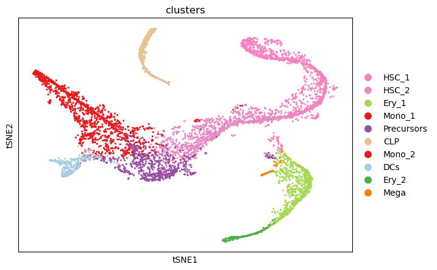
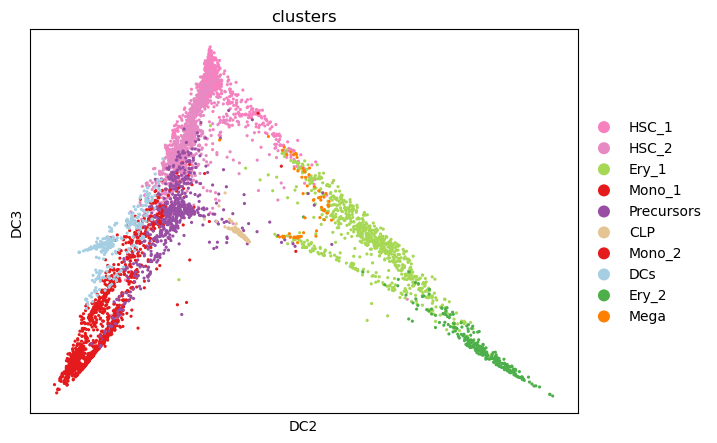
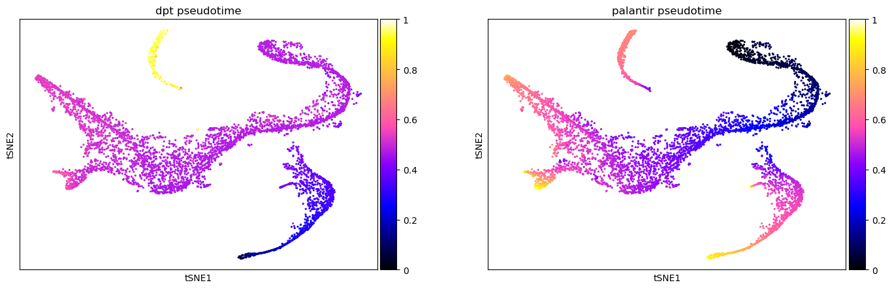
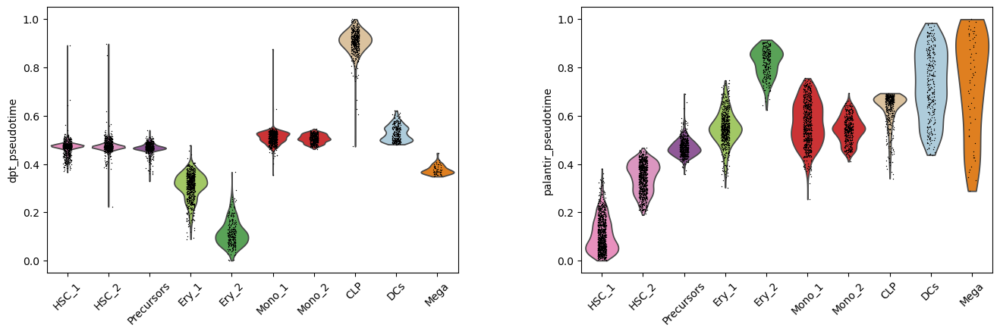

15. 伪时间排序#
关键要点
轨迹推断方法要求（大致）知道生物学过程的起点。
生物学过程的性质决定了可以使用哪些 TI 算法。dynguidelines 可帮助选择合适的 TI 方法。
环境设置
安装 conda:
在创建环境之前，请确保 conda 已安装在您的系统中。
保存 yml 内容:
将 yml 选项卡中的内容复制到名为
environment.yml的文件中。
创建环境:
打开终端或命令提示符。
运行以下命令：
conda env create -f environment.yml
激活环境:
创建好环境后，使用以下命令激活它：
conda activate <environment_name>
替换
<environment_name>，名称就是在environment.yml文件中指定的那个。在 yml 文件里，它看起来像这样：name: <environment_name>
验证安装:
通过运行以下命令，检查环境是否创建成功：
conda env list
name: pseudotemporal
channels:
- conda-forge
dependencies:
- conda-forge::python=3.13
- conda-forge::scanpy=1.12
- conda-forge::ipykernel=7.1.0
- pip
- pip:
- lamindb
获取数据和笔记本
本书使用 lamindb，并通过 theislab/sc-best-practices 实例 来存储、共享和加载数据集与笔记本。感谢 Lamin Labs 提供免费托管服务。
安装 lamindb
安装 lamindb Python 软件包：
pip install lamindb
可选择创建 lamin 账户
按照以下 说明 注册并登录。
验证你的设置
运行
lamin connect命令：
import lamindb as ln ln.Artifact.connect("theislab/sc-best-practices").df()
你现在应该看到最多100个存储的数据集。
访问数据集（Artifact）
在 Artifacts 页面 搜索该数据集。
加载一个 Artifact 及其对应的对象：
import lamindb as ln af = ln.Artifact.connect("theislab/sc-best-practices").get(key="key_of_dataset", is_latest=True) obj = af.load()
该对象现在已可在内存中访问，并可用于分析。请调整
ln.Artifact.connect("theislab/sc-best-practices").get("SOMEIDXXXX")后缀以获取相应的版本。访问笔记本（Transform）
在 Transforms 页面 搜索该笔记本。
加载笔记本：
lamin load <notebook url>
这会把笔记本下载到当前工作目录。与
Artifacts类似，你可以调整后缀 ID 来获取旧版本。
15.1. 动机#
单细胞测序分析对生物组织进行高分辨率测量 [Islam et al., 2011], [Hwang et al., 2018]。因此，这些技术有助于破译和理解细胞异质性 [Briggs et al., 2018], [Sikkema et al., 2022]，以及某个生物学过程的动态 [Jardine et al., 2021], [He et al., 2022].
相关研究包括量化细胞命运、以及识别驱动这一过程的基因。然而，在经典的单细胞 RNA 测序（scRNA-seq）方案中，细胞在测序时会被破坏，因此无法追踪它们的发育过程，例如基因表达谱随时间的变化。尽管近来的技术进步使得对转录组进行连续记录成为可能 [Chen et al., 2022]，它们在实验上颇具挑战性，目前也无法扩展到更大的数据集。因此，只能改为从所测量的快照数据来估计其背后的动态过程。
尽管传统上样本只在单个实验时间点采集，但仍能观察到多种细胞类型。这种多样性源于生物学过程的异步性。因此，我们能够观察到发育过程的一个连续范围。重建发育全景正是该领域的目标，这一领域被称为轨迹推断（trajectory inference，TI）。这项任务通过按发育过程对观测到的细胞状态进行排序来完成。通过把离散的注释映射到一个连续的域上，各个状态被沿着发育方向对齐——这个连续的域就是所谓的 pseudotime.
伪时间根据细胞各自在发育过程中所处的阶段，对它们进行相对排序。较不成熟的细胞被赋予较小的值，成熟的细胞被赋予较大的值。以骨髓样本为例，造血干细胞被赋予较低的伪时间，红系细胞被赋予较高的伪时间。在单细胞 RNA 测序数据中，这一赋值依据的是单细胞的转录组谱。此外，构建伪时间通常还需要指定一个初始细胞（也就是根细胞），整个过程从它开始。
15.2. 伪时间构建#
伪时间的构建通常遵循一个共同的流程：第一步，把超高维的单细胞数据投影到一个较低维的表示上。这样做的依据是：人们观察到，动态过程是在一个低维流形上推进的 [Wagner et al., 2016]。在实践中，伪时间方法可能依赖于主成分（例如 Palantir [Setty et al., 2019]）或扩散成分（例如扩散伪时间（DPT） [Haghverdi et al., 2016]）。在此之后，伪时间会基于以下原则之一来构建。
先对观测进行聚类，然后识别这些聚类之间的连接。可以对这些聚类进行排序，从而构建出伪时间。下文中，我们将把这种方法称为 聚类方法。经典聚类算法包括 \(k\)-means [Lloyd, 1982], [MacQueen, 1967], Leiden [Traag et al., 2019]，或层次聚类 [Müllner, 2011]。聚类可以基于相似性连接，也可以通过构建最小生成树（MST）连接。[Pettie and Ramachandran, 2002].
图方法 首先在观测的低维表示之间寻找连接。这一过程定义了一个图，再据此定义聚类，从而建立起一种排序。PAGA []例如，把图划分成 Leiden 聚类，并估计它们之间的连接。直观地说，这种方法在以较低分辨率分析数据的同时，保留了数据的全局拓扑结构。因此，计算效率得以提高。
基于流形学习的方法 其过程类似于 聚类方法。不过，聚类之间的连接，是通过主曲线（principal curves）或图来估计底层轨迹而定义的。主曲线会找到一条一维曲线，在更高维的空间中把细胞观测连接起来。这种方法的一个典型代表是 Slingshot [Street et al., 2018].
概率框架为有序的细胞对赋予转移概率。每个转移概率量化的是“参考细胞是另一个细胞的祖先”这一可能性。这些概率定义了随机过程，进而用来定义伪时间。例如，DPT（Diffusion Pseudotime，扩散伪时间）被定义为随机游走中连续状态之间的差。与之相对，Palantir [Setty et al., 2019] 则把轨迹本身建模为马尔可夫链。虽然这两种方法都依赖概率框架，但它们都需要指定一个根细胞。伪时间本身就是相对于这个细胞计算出来的。
轨迹推断（TI）是一个已被充分研究、方法丰富的领域。要为分析某个单细胞数据集选择合适的方法，必须先理解生物学过程本身。对这一过程的理解，尤其包括它的性质—— 即它是线性、循环还是分支的。同样，一个数据集中若同时存在正交的过程，也会限制可用的 TI 方法。为帮助选出合适的工具，dynguidelines [Deconinck et al., 2021] 提供了对算法及其特征的详尽概述。
单细胞转录组中的正交过程
正交过程指的是两个互不相关的独立生物学程序。细胞周期与某种疾病就属于正交过程。
15.3. 下游任务和前景#
尽管 TI 和伪时间本身已经能提供有价值的洞见，但它们通常只是更精细分析的垫脚石。例如，识别终末状态就是一个可以研究的经典生物学问题。类似地，谱系分叉以及 驱动基因 可以基于 TI 和伪时间来识别。哪些问题可以回答，以及答案是如何找到的，通常都是方法特有的。Palantir [Setty et al., 2019]例如，它把终末状态识别为其所构建的马尔可夫链的吸收态。
轨迹推断的成功是有充分证据的，因此提出了许多方法。然而，随着测序技术的进步，出现了新的信息来源。ATAC-seq [Buenrostro et al., 2015]，CITE-seq [Stoeckius et al., 2017]，以及 DOGMA-seq [Mimitou et al., 2021]，例如，能测量转录组之外的其他模态。谱系追踪 [] 以及代谢标记 [Erhard et al., 2019], [Battich et al., 2020], [Qiu et al., 2020], [Erhard et al., 2022] 甚至能提供某个细胞（可能的）未来状态。因此，未来的 TI 工具将能纳入更多信息，从而更准确、更稳健地估计轨迹和伪时间，进而回答新的问题。例如，RNA velocity [Manno et al., 2018], [Bergen et al., 2020], [Bergen et al., 2021] 就是这样一种技术，它利用未剪接（unspliced）和已剪接（spliced）的 mRNA 来推断有方向的、动态的信息，超越经典的静态快照数据。
15.4. 推断成人骨髓的伪时间#
为了演示如何构建伪时间、以及如何比较不同的伪时间，我们分析了一个成人骨髓数据集 [Setty et al., 2019].
15.4.1. 环境设置#
import lamindb as ln
import scanpy as sc
assert ln.setup.settings.instance.slug == "theislab/sc-best-practices"
ln.track("5tukHKyz8kFR")
→ connected lamindb: theislab/sc-best-practices
→ loaded Transform('5tukHKyz8kFR0001', key='pseudotemporal.ipynb'), re-started Run('Hfx6ZbLSPyO3msPK') at 2026-01-14 17:24:35 UTC
→ notebook imports: lamindb==2.0.1 scanpy==1.11.5
15.4.2. 数据加载#
af = ln.Artifact.connect("theislab/sc-best-practices").get(
key="trajectory/pseudotemporal.h5ad", is_latest=True
)
adata = af.load()
adata
... synchronizing pseudotemporal.h5ad: 100.0%
AnnData object with n_obs × n_vars = 5780 × 27876
obs: 'clusters', 'palantir_pseudotime', 'palantir_diff_potential'
var: 'palantir'
uns: 'clusters_colors', 'palantir_branch_probs_cell_types'
obsm: 'MAGIC_imputed_data', 'X_tsne', 'palantir_branch_probs'
layers: 'spliced', 'unspliced'
要构建伪时间，必须先对数据做预处理。这里，我们过滤掉只在很少细胞（这里是至少 20 个）中表达的基因。值得注意的是，后续伪时间的构建对阈值的具体取值是稳健的。在这一初始基因过滤之后，对细胞做大小归一化，并对计数做 log1p 变换以减小离群值的影响。和往常一样，我们也识别并标注高变基因。最后，构建一个最近邻图，我们将基于它来定义伪时间。主成分的数目根据所解释的方差来选择。
sc.pp.filter_genes(adata, min_counts=20)
sc.pp.normalize_total(adata)
sc.pp.log1p(adata)
sc.pp.highly_variable_genes(adata)
sc.tl.pca(adata)
sc.pp.neighbors(adata, n_pcs=10)
/Users/seohyon/miniconda3/envs/pseudotemporal/lib/python3.13/site-packages/tqdm/auto.py:21: TqdmWarning: IProgress not found. Please update jupyter and ipywidgets. See https://ipywidgets.readthedocs.io/en/stable/user_install.html
from .autonotebook import tqdm as notebook_tqdm
sc.pl.scatter(adata, basis="tsne", color="clusters")

按细胞类型注释着色的二维 t-SNE 表示显示，各细胞类型聚得很好。
此外，发育层级也清晰可见。
15.4.3. 伪时间构建#
要计算扩散伪时间（DPT），必须先计算相应的扩散图（diffusion map）。
sc.tl.diffmap(adata)
骨髓中的分化层级已被很好地理解。然而，我们只知道发育过程是以造血干细胞的形式开始的，却并不知道具体是我们数据集中相应聚类里的哪一个细胞。为了确定一个可能的初始细胞，我们考察各个扩散成分。我们把在某一维度（在我们的例子中是第 3 维）上扩散成分最极端的那个干细胞识别为起始细胞。
扩散图与扩散成分
扩散图 向我们展示了一个细胞状态到另一个状态之间的非线性距离。这个距离之所以必须是非线性的，是因为细胞遵循的是逐渐变化的连续路径，而不是从一个状态“跳跃”到另一个状态。与 PCA 不同，扩散图忽略欧几里得距离，转而试图找到数据所遵循的弯曲路径。
扩散成分 是某个转移矩阵的特征向量，它表示扩散图中运动的“偏好方向”。阶数较低的扩散成分捕捉到的是更重要的生物学转变。
# Setting root cell as described above
root_ixs = adata.obsm["X_diffmap"][:, 3].argmin()
sc.pl.scatter(
adata,
basis="diffmap",
color=["clusters"],
components=[2, 3],
)
adata.uns["iroot"] = root_ixs

sc.tl.dpt(adata)
不同的伪时间方法会给出不同的结果。有时，某种伪时间会比其他方法更准确地刻画底层发育过程。这里，我们把刚刚计算的扩散伪时间（DPT）与预先计算好的 Palantir 伪时间作比较（见 相应教程）。比较不同伪时间的一种办法，是给数据的低维嵌入（这里是 t-SNE）着色。在这里，与所有其他细胞类型相比，DPT 在 CLP 聚类中极高。与之相反，Palantir 伪时间会随发育成熟度持续增大。
sc.pl.scatter(
adata,
basis="tsne",
color=["dpt_pseudotime", "palantir_pseudotime"],
color_map="gnuplot2",
)

除了给数据的低维表示着色之外，我们还可以考察分配给每个细胞类型聚类的伪时间值的分布。这种表示再次表明，在 DPT 的情形下，CLP 聚类构成了一个离群点。此外，诸如 HSC_1 和 HSC_2 等聚类中包含若干伪时间偏大的细胞。这些被夸大的数值，与我们先验的生物学知识（即这些聚类处于发育过程的起点）相矛盾。
sc.pl.violin(
adata,
keys=["dpt_pseudotime", "palantir_pseudotime"],
groupby="clusters",
rotation=45,
order=[
"HSC_1",
"HSC_2",
"Precursors",
"Ery_1",
"Ery_2",
"Mono_1",
"Mono_2",
"CLP",
"DCs",
"Mega",
],
)

综合这些观察以及关于骨髓发育的先验知识，我们会得出结论：继续使用 Palantir 伪时间。
15.5. 参考文献#
Nico Battich, Joep Beumer, Buys de Barbanson, Lenno Krenning, Chloé S. Baron, Marvin E. Tanenbaum, Hans Clevers, and Alexander van Oudenaarden. Sequencing metabolically labeled transcripts in single cells reveals mRNA turnover strategies. Science, 367(6482):1151–1156, March 2020. URL: https://doi.org/10.1126/science.aax3072, doi:10.1126/science.aax3072.
Volker Bergen, Marius Lange, Stefan Peidli, F. Alexander Wolf, and Fabian J. Theis. Generalizing RNA velocity to transient cell states through dynamical modeling. Nature Biotechnology, 38(12):1408–1414, August 2020. URL: https://doi.org/10.1038/s41587-020-0591-3, doi:10.1038/s41587-020-0591-3.
Volker Bergen, Ruslan A Soldatov, Peter V Kharchenko, and Fabian J Theis. RNA velocity—current challenges and future perspectives. Molecular Systems Biology, August 2021. URL: https://doi.org/10.15252/msb.202110282, doi:10.15252/msb.202110282.
James A. Briggs, Caleb Weinreb, Daniel E. Wagner, Sean Megason, Leonid Peshkin, Marc W. Kirschner, and Allon M. Klein. The dynamics of gene expression in vertebrate embryogenesis at single-cell resolution. Science, June 2018. URL: https://doi.org/10.1126/science.aar5780, doi:10.1126/science.aar5780.
Jason D. Buenrostro, Beijing Wu, Ulrike M. Litzenburger, Dave Ruff, Michael L. Gonzales, Michael P. Snyder, Howard Y. Chang, and William J. Greenleaf. Single-cell chromatin accessibility reveals principles of regulatory variation. Nature, 523(7561):486–490, June 2015. URL: https://doi.org/10.1038/nature14590, doi:10.1038/nature14590.
Wanze Chen, Orane Guillaume-Gentil, Pernille Yde Rainer, Christoph G. Gäbelein, Wouter Saelens, Vincent Gardeux, Amanda Klaeger, Riccardo Dainese, Magda Zachara, Tomaso Zambelli, Julia A. Vorholt, and Bart Deplancke. Live-seq enables temporal transcriptomic recording of single cells. Nature, 608(7924):733–740, August 2022. URL: https://doi.org/10.1038/s41586-022-05046-9, doi:10.1038/s41586-022-05046-9.
Louise Deconinck, Robrecht Cannoodt, Wouter Saelens, Bart Deplancke, and Yvan Saeys. Recent advances in trajectory inference from single-cell omics data. Current Opinion in Systems Biology, 27:100344, September 2021. URL: https://doi.org/10.1016/j.coisb.2021.05.005, doi:10.1016/j.coisb.2021.05.005.
Florian Erhard, Marisa A. P. Baptista, Tobias Krammer, Thomas Hennig, Marius Lange, Panagiota Arampatzi, Christopher S. Jürges, Fabian J. Theis, Antoine-Emmanuel Saliba, and Lars Dölken. scSLAM-seq reveals core features of transcription dynamics in single cells. Nature, 571(7765):419–423, July 2019. URL: https://doi.org/10.1038/s41586-019-1369-y, doi:10.1038/s41586-019-1369-y.
Florian Erhard, Antoine-Emmanuel Saliba, Alexandra Lusser, Christophe Toussaint, Thomas Hennig, Bhupesh K. Prusty, Daniel Kirschenbaum, Kathleen Abadie, Eric A. Miska, Caroline C. Friedel, Ido Amit, Ronald Micura, and Lars Dölken. Time-resolved single-cell RNA-seq using metabolic RNA labelling. Nature Reviews Methods Primers, September 2022. URL: https://doi.org/10.1038/s43586-022-00157-z, doi:10.1038/s43586-022-00157-z.
Laleh Haghverdi, Maren Büttner, F Alexander Wolf, Florian Buettner, and Fabian J Theis. Diffusion pseudotime robustly reconstructs lineage branching. Nature Methods, 13(10):845–848, August 2016. URL: https://doi.org/10.1038/nmeth.3971, doi:10.1038/nmeth.3971.
Peng He, Kyungtae Lim, Dawei Sun, Jan Patrick Pett, Quitz Jeng, Krzysztof Polanski, Ziqi Dong, Liam Bolt, Laura Richardson, Lira Mamanova, Monika Dabrowska, Anna Wilbrey-Clark, Elo Madissoon, Zewen Kelvin Tuong, Emma Dann, Chenqu Suo, Isaac Goh, Masahiro Yoshida, Marko Z Nikolić, Sam M Janes, Xiaoling He, Roger A Barker, Sarah A Teichmann, John C. Marioni, Kerstin B Meyer, and Emma L Rawlins. A human fetal lung cell atlas uncovers proximal-distal gradients of differentiation and key regulators of epithelial fates. bioRxiv, 2022. URL: https://www.biorxiv.org/content/early/2022/09/30/2022.01.11.474933, arXiv:https://www.biorxiv.org/content/early/2022/09/30/2022.01.11.474933.full.pdf, doi:10.1101/2022.01.11.474933.
Byungjin Hwang, Ji Hyun Lee, and Duhee Bang. Single-cell RNA sequencing technologies and bioinformatics pipelines. Experimental &$\mathsemicolon $ Molecular Medicine, 50(8):1–14, August 2018. URL: https://doi.org/10.1038/s12276-018-0071-8, doi:10.1038/s12276-018-0071-8.
Saiful Islam, Una Kjällquist, Annalena Moliner, Pawel Zajac, Jian-Bing Fan, Peter Lönnerberg, and Sten Linnarsson. Characterization of the single-cell transcriptional landscape by highly multiplex RNA-seq. Genome Research, 21(7):1160–1167, May 2011. URL: https://doi.org/10.1101/gr.110882.110, doi:10.1101/gr.110882.110.
Laura Jardine, Simone Webb, Issac Goh, Mariana Quiroga Londoño, Gary Reynolds, Michael Mather, Bayanne Olabi, Emily Stephenson, Rachel A. Botting, Dave Horsfall, Justin Engelbert, Daniel Maunder, Nicole Mende, Caitlin Murnane, Emma Dann, Jim McGrath, Hamish King, Iwo Kucinski, Rachel Queen, Christopher D. Carey, Caroline Shrubsole, Elizabeth Poyner, Meghan Acres, Claire Jones, Thomas Ness, Rowen Coulthard, Natalina Elliott, Sorcha O'Byrne, Myriam L. R. Haltalli, John E. Lawrence, Steven Lisgo, Petra Balogh, Kerstin B. Meyer, Elena Prigmore, Kirsty Ambridge, Mika Sarkin Jain, Mirjana Efremova, Keir Pickard, Thomas Creasey, Jaume Bacardit, Deborah Henderson, Jonathan Coxhead, Andrew Filby, Rafiqul Hussain, David Dixon, David McDonald, Dorin-Mirel Popescu, Monika S. Kowalczyk, Bo Li, Orr Ashenberg, Marcin Tabaka, Danielle Dionne, Timothy L. Tickle, Michal Slyper, Orit Rozenblatt-Rosen, Aviv Regev, Sam Behjati, Elisa Laurenti, Nicola K. Wilson, Anindita Roy, Berthold Göttgens, Irene Roberts, Sarah A. Teichmann, and Muzlifah Haniffa. Blood and immune development in human fetal bone marrow and down syndrome. Nature, 598(7880):327–331, September 2021. URL: https://doi.org/10.1038/s41586-021-03929-x, doi:10.1038/s41586-021-03929-x.
S. Lloyd. Least squares quantization in PCM. IEEE Transactions on Information Theory, 28(2):129–137, March 1982. URL: https://doi.org/10.1109/tit.1982.1056489, doi:10.1109/tit.1982.1056489.
Daniel Müllner. Modern hierarchical, agglomerative clustering algorithms. 2011. URL: https://arxiv.org/abs/1109.2378, doi:10.48550/ARXIV.1109.2378.
J. B. MacQueen. Some methods for classification and analysis of multivariate observations. In L. M. Le Cam and J. Neyman, editors, Proc. of the fifth Berkeley Symposium on Mathematical Statistics and Probability, volume 1, 281–297. University of California Press, 1967.
Gioele La Manno, Ruslan Soldatov, Amit Zeisel, Emelie Braun, Hannah Hochgerner, Viktor Petukhov, Katja Lidschreiber, Maria E. Kastriti, Peter Lönnerberg, Alessandro Furlan, Jean Fan, Lars E. Borm, Zehua Liu, David van Bruggen, Jimin Guo, Xiaoling He, Roger Barker, Erik Sundström, Gonçalo Castelo-Branco, Patrick Cramer, Igor Adameyko, Sten Linnarsson, and Peter V. Kharchenko. RNA velocity of single cells. Nature, 560(7719):494–498, August 2018. URL: https://doi.org/10.1038/s41586-018-0414-6, doi:10.1038/s41586-018-0414-6.
Eleni P. Mimitou, Caleb A. Lareau, Kelvin Y. Chen, Andre L. Zorzetto-Fernandes, Yuhan Hao, Yusuke Takeshima, Wendy Luo, Tse-Shun Huang, Bertrand Z. Yeung, Efthymia Papalexi, Pratiksha I. Thakore, Tatsuya Kibayashi, James Badger Wing, Mayu Hata, Rahul Satija, Kristopher L. Nazor, Shimon Sakaguchi, Leif S. Ludwig, Vijay G. Sankaran, Aviv Regev, and Peter Smibert. Scalable, multimodal profiling of chromatin accessibility, gene expression and protein levels in single cells. Nature Biotechnology, 39(10):1246–1258, June 2021. URL: https://doi.org/10.1038/s41587-021-00927-2, doi:10.1038/s41587-021-00927-2.
Seth Pettie and Vijaya Ramachandran. An optimal minimum spanning tree algorithm. Journal of the ACM, 49(1):16–34, January 2002. URL: https://doi.org/10.1145/505241.505243, doi:10.1145/505241.505243.
Qi Qiu, Peng Hu, Xiaojie Qiu, Kiya W. Govek, Pablo G. Cámara, and Hao Wu. Massively parallel and time-resolved RNA sequencing in single cells with scNT-seq. Nature Methods, 17(10):991–1001, August 2020. URL: https://doi.org/10.1038/s41592-020-0935-4, doi:10.1038/s41592-020-0935-4.
Manu Setty, Vaidotas Kiseliovas, Jacob Levine, Adam Gayoso, Linas Mazutis, and Dana Pe'er. Characterization of cell fate probabilities in single-cell data with palantir. Nature Biotechnology, 37(4):451–460, March 2019. URL: https://doi.org/10.1038/s41587-019-0068-4, doi:10.1038/s41587-019-0068-4.
Lisa Sikkema, Daniel C Strobl, Luke Zappia, Elo Madissoon, Nikolay S Markov, Laure-Emmanuelle Zaragosi, Meshal Ansari, Marie-Jeanne Arguel, Leonie Apperloo, Christophe Becavin, Marijn Berg, Evgeny Chichelnitskiy, Mei-I Chung, Antoine Collin, Aurore C A Gay, Baharak Hooshiar Kashani, Manu Jain, Theodore Kapellos, Tessa M Kole, Christoph H Mayr, Von Michael Papen, Lance Peter, Ciro Ramirez-Suastegui, Janine Schniering, Chase J Taylor, Thomas Walzthoeni, Chuan Xu, Linh T Bui, Carlo de Donno, Leander Dony, Minzhe Guo, Austin J Gutierrez, Lukas Heumos, Ni Huang, Ignacio L Ibarra, Nathan D Jackson, Preetish Kadur Lakshminarasimha Murthy, Mohammad Lotfollahi, Tracy Tabib, Carlos Talavera-Lopez, Kyle J Travaglini, Anna Wilbrey-Clark, Kaylee B Worlock, Masahiro Yoshida, Tushar J Desai, Oliver Eickelberg, Christine Falk, Naftali Kaminski, Mark A Krasnow, Robert Lafyatis, Marko Z Nikoli, Joseph E Powell, Jayaraj Rajagopal, Orit Rozenblatt-Rosen, Max A Seibold, Dean Sheppard, Douglas P Shepherd, Sarah A Teichmann, Alexander M Tsankov, Jeffrey Whitsett, Yan Xu, Nicholas E Banovich, Pascal Barbry, Thu E Duong, Kerstin B Meyer, Jonathan A Kropski, Dana Pe'er, Herbert B Schiller, Purushothama Rao Tata, Joachim L Schultze, Alexander V Misharin, Martijn C Nawijn, Malte D Luecken, and Fabian J Theis. An integrated cell atlas of the human lung in health and disease. bioRxiv, pages 2022.03.10.483747, March 2022. doi:10.1101/2022.03.10.483747.
Marlon Stoeckius, Christoph Hafemeister, William Stephenson, Brian Houck-Loomis, Pratip K Chattopadhyay, Harold Swerdlow, Rahul Satija, and Peter Smibert. Simultaneous epitope and transcriptome measurement in single cells. Nature Methods, 14(9):865–868, July 2017. URL: https://doi.org/10.1038/nmeth.4380, doi:10.1038/nmeth.4380.
Kelly Street, Davide Risso, Russell B. Fletcher, Diya Das, John Ngai, Nir Yosef, Elizabeth Purdom, and Sandrine Dudoit. Slingshot: cell lineage and pseudotime inference for single-cell transcriptomics. BMC Genomics, June 2018. URL: https://doi.org/10.1186/s12864-018-4772-0, doi:10.1186/s12864-018-4772-0.
V. A. Traag, L. Waltman, and N. J. van Eck. From louvain to leiden: guaranteeing well-connected communities. Scientific Reports, March 2019. URL: https://doi.org/10.1038/s41598-019-41695-z, doi:10.1038/s41598-019-41695-z.
Allon Wagner, Aviv Regev, and Nir Yosef. Revealing the vectors of cellular identity with single-cell genomics. Nature Biotechnology, 34(11):1145–1160, November 2016. URL: https://doi.org/10.1038/nbt.3711, doi:10.1038/nbt.3711.
15.6. 贡献者#
我们衷心感谢以下人员的贡献：
15.6.2. 审阅者#
Lukas Heumos